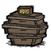

<div class="mw-content-ltr" dir="ltr" id="mw-content-text" lang="en"><figure class="article-thumb tright" style="width: 92px"> <a class="image" href="File:Icon_Food.png.html"></a> <figcaption> <p class="caption">Tab Icon</p> </figcaption> </figure>
<table class="cquote" style="margin:auto; padding-top:10px;">
<tr>
<td style="vertical-align: top; width:20px; font-size:36px; font-family:'Times New Roman', serif; font-weight:bold; text-align:left; padding:0px;"> “
</td><td style="vertical-align: top; padding:0px; font-size:16px; font-family:'Segoe Print'"> Do I look like a farmer?
</td><td style="vertical-align: bottom; width:20px; font-size:36px; font-family:'Times New Roman', serif; font-weight:bold; text-align:right; padding:0px;"> ”
</td></tr>
<tr>
<td colspan="3" style="padding-top:0px;"> <p style="font-size:12px; text-align:right; font-family:'Segoe Print'"><cite style="font-style:normal;">–Maxwell</cite></p>
</td></tr></table>
<p>The following structures can be built from the <b>Food Tab</b>:
</p>
<div style="clear:both; font-weight: bold"><div class="wikia-gallery wikia-gallery-position-center wikia-gallery-spacing-medium wikia-gallery-border-none wikia-gallery-captions-center wikia-gallery-caption-size-medium" hash="2eda73c1dc5872b3cc4971bfb465eccc" id="gallery-0"><div class="wikia-gallery-row"><div class="wikia-gallery-item" style="width:64px; "><div class="thumb" style="height:64px;"><div class="gallery-image-wrapper accent" id="Basic_Farm" style="position: relative; height:64px; width:64px;"><a class="image link-internal" href="Basic_Farm.html" style="height:64px; width:64px;" title="Basic Farm (4 KB)"></a></div></div><div class="lightbox-caption" style="width:64px;"><a class="mw-redirect" href="Basic_Farm.html" title="Basic Farm">Basic Farm</a></div></div><div class="wikia-gallery-item" style="width:64px; "><div class="thumb" style="height:64px;"><div class="gallery-image-wrapper accent" id="Improved_Farm" style="position: relative; height:64px; width:64px;"><a class="image link-internal" href="Improved_Farm.html" style="height:64px; width:64px;" title="Improved Farm (5 KB)"></a></div></div><div class="lightbox-caption" style="width:64px;"><a class="mw-redirect" href="Improved_Farm.html" title="Improved Farm">Improved Farm</a></div></div><div class="wikia-gallery-item" style="width:64px; "><div class="thumb" style="height:64px;"><div class="gallery-image-wrapper accent" id="Bee_Box" style="position: relative; height:64px; width:64px;"><a class="image link-internal" href="Bee_Box.html" style="height:64px; width:64px;" title="Bee Box (4 KB)"></a></div></div><div class="lightbox-caption" style="width:64px;"><a href="Bee_Box.html" title="Bee Box">Bee Box</a></div></div><div class="wikia-gallery-item" style="width:64px; "><div class="thumb" style="height:64px;"><div class="gallery-image-wrapper accent" id="Drying_Rack" style="position: relative; height:64px; width:64px;"><a class="image link-internal" href="Drying_Rack.html" style="height:64px; width:64px;" title="Drying Rack (4 KB)"></a></div></div><div class="lightbox-caption" style="width:64px;"><a href="Drying_Rack.html" title="Drying Rack">Drying Rack</a></div></div><div class="wikia-gallery-item" style="width:64px; "><div class="thumb" style="height:64px;"><div class="gallery-image-wrapper accent" id="Crock_Pot" style="position: relative; height:64px; width:64px;"><a class="image link-internal" href="Crock_Pot.html" style="height:64px; width:64px;" title="Crock Pot (4 KB)"></a></div></div><div class="lightbox-caption" style="width:64px;"><a href="Crock_Pot.html" title="Crock Pot">Crock Pot</a></div></div><div class="wikia-gallery-item" style="width:64px; "><div class="thumb" style="height:64px;"><div class="gallery-image-wrapper accent" id="Ice_Box" style="position: relative; height:64px; width:64px;"><a class="image link-internal" href="Ice_Box.html" style="height:64px; width:64px;" title="Ice Box (3 KB)"></a></div></div><div class="lightbox-caption" style="width:64px;"><a href="Ice_Box.html" title="Ice Box">Ice Box</a></div></div></div></div><script>JSSnippetsStack.push({dependencies:["/extensions/wikia/WikiaPhotoGallery/js/WikiaPhotoGallery.view.js","/extensions/wikia/WikiaPhotoGallery/css/gallery.scss"],callback:function(json){WikiaPhotoGalleryView.init(json)},id:"WikiaPhotoGalleryView.init"})</script></div>
<div style="clear:both"></div>
<table cellspacing="1" style="width:100%; border:#90725D 1px solid">
<tr>
<td style="background-color:#DEC8A1; text-align:center;"><b><a href="Category:Game_Tabs.html" title="Category:Game Tabs">Game Tabs</a></b><div class="plainlinks" style="float:right; margin-right:8px;"><small><a href="Template:Tabs.html" title="Template:Tabs">view</a></small></div></td>
</tr>
<tr>
<td style="padding-left:8px;"><a href="Tools_Tab.html" title="Tools Tab">Tools</a> • <a href="Light_Tab.html" title="Light Tab">Light</a> • <a href="Survival_Tab.html" title="Survival Tab">Survival</a> • <strong class="selflink">Food</strong> • <a href="Science_Tab.html" title="Science Tab">Science</a> • <a href="Fight_Tab.html" title="Fight Tab">Fight</a> • <a href="Structures_Tab.html" title="Structures Tab">Structures</a> • <a href="Refine.html" title="Refine">Refine</a> • <a href="Magic_Tab.html" title="Magic Tab">Magic</a> • <a class="mw-redirect" href="Dress_Tab.html" title="Dress Tab">Dress</a> • <a href="Ancient_Tab.html" title="Ancient Tab">Ancient</a> • <a href="Books.html" title="Books">Books</a></td>
</tr>
</table>
<!-- 
NewPP limit report
Preprocessor node count: 117/300000
Post‐expand include size: 2717/2097152 bytes
Template argument size: 672/2097152 bytes
Expensive parser function count: 0/100
-->
<!-- Saved in parser cache with key dontstarvegame:pcache:idhash:55630-0!*!0!*!*!2!* -->
<noscript><link href="http://slot1.images.wikia.nocookie.net/__cb1402702339/common/extensions/wikia/ImageLazyLoad/css/ImageLazyLoadNoScript.css" rel="stylesheet"/></noscript><noscript><link href="http://slot1.images.wikia.nocookie.net/__cb1402702339/common/extensions/wikia/TOCimprovements/TOCNoScript.css" rel="stylesheet"/></noscript></div>